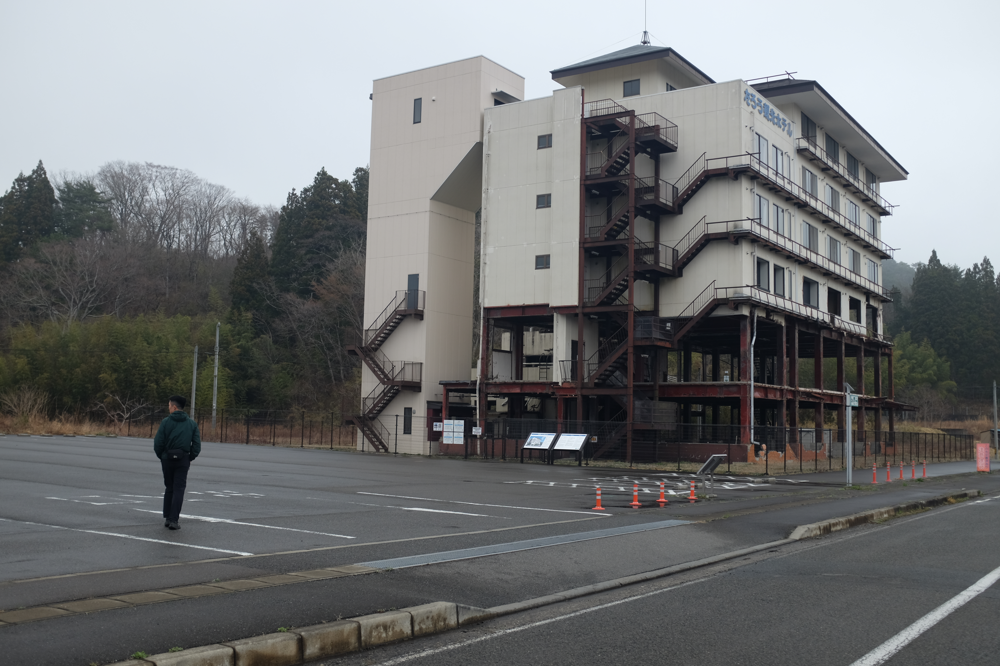
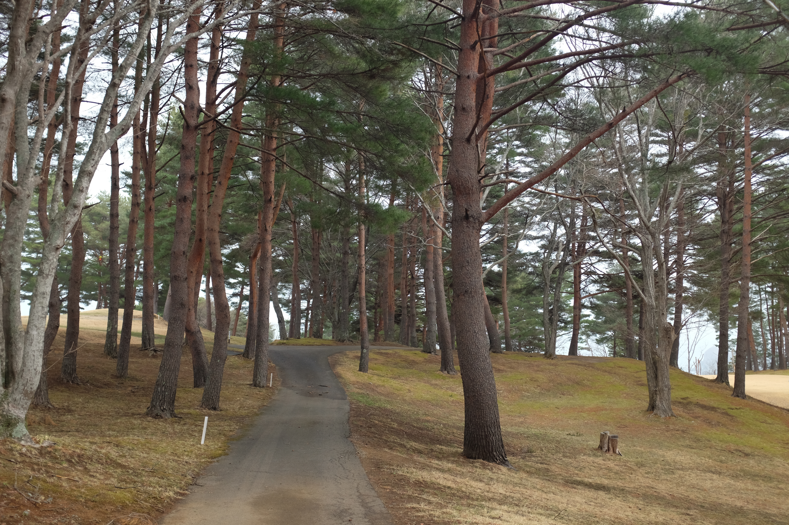
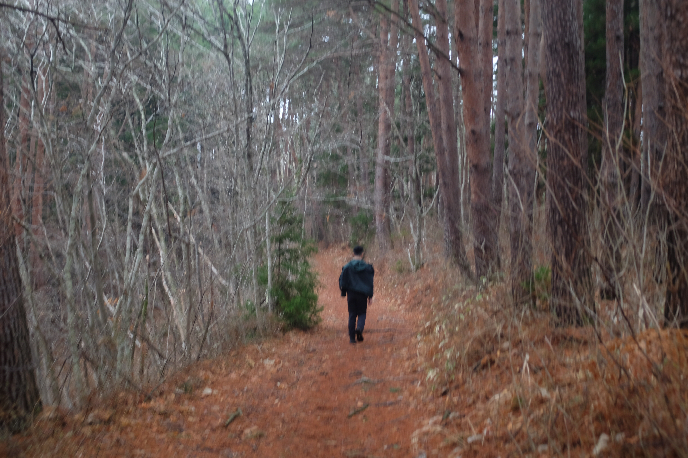

DAY 5: Tarou (田老) > Shiofukiana Blowhole (潮吹穴)
SITES: Miyako Country Club (宮古カントリークラブ), Shiofukiana Blowhole (潮吹穴)
Stay: Hotel Sedawaya in Miyako
A strange day of walking a lot, and not seeing much.
We were lighter today since we decided to keep our packs at the hotel (we had the genius idea of getting a hotel at our destination today so we didn't have to carry the packs, and just train to the trail head).
The start of the trail was in Shintaro (New Taro), and the first thing to check out was the abandoned Taro Kanko Hotel. The tsunami wiped out the bottom two floors, and the government bought back the building and preserved it to show the devastation of the 2011 tsunami. It was a cold, grey and quiet morning there.

The walk was the definition of "doing a lot while not doing a lot". We ascended and descended multiple mountains, each one still very strenuous. At the top of each mountain, the view was more or less the same as the day before, but each stretch along the ridge would last shorter. We did pass by a golf course at one point which was novel, and there were also some nice walks through wooded areas in the middle, but that's it.
 
We ended the day after about 20 or so kilometres of having seen similar landscape to yesterday. To top it all off, we ended at the Shiofukiana Blowhole, which is supposed to be an ocean geyser of sorts. But, we had reached there during low tide and saw nothing -- just more ocean.
About 100 kilometres in now; the last stretch otherwise uninspiring. Such is the irony of life!